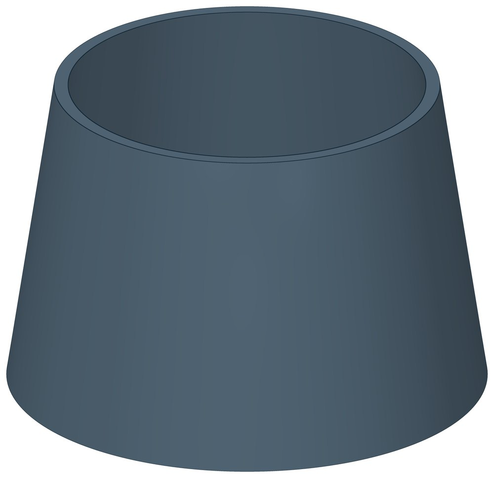

Переход стальной концентрический
Концентрический переход под приварку: соединяет трубы разного диаметра, оси труб совпадают.

- Диаметр трубы Dн
- 108–530 мм
- Документ
- ГОСТ 17378-2001
- Исполнений
- 55
- Масса
- 1,2–53 кг
- Цена в магазине
- 86–10 653 ₽
- 3D-модели
- у 45 из 55 исполнений
Применение и монтаж
Назначение: где применяется
Смена диаметра трубопровода. В обозначении — больший диаметр со стенкой и меньший диаметр со стенкой: 219×6–159×4,5.
D и T — больший диаметр и его стенка, D1 и T1 — меньший диаметр и его стенка, L — длина перехода. Масса в таблице ГОСТ 17378-2001 — это масса трубной заготовки; готовый переход легче.
Таблица исполнений
| Обозначение | Код ПРОМБУРГ | Dмм | Tмм | D1мм | T1мм | Lмм | Цена₽ | Массакг | Артикул | Магазин | 3D |
|---|---|---|---|---|---|---|---|---|---|---|---|
| 108×6–89×6 | ПБ-ПЕР-0108-1 | 108 | 6 | 89 | 6 | 80 | 89 | 1,2 | TEN2134 | Купить | 3D |
| 133×5–108×4,5* | ПБ-ПЕР-0133-1 | 133 | 5 | 108 | 4,5 | — | 86 | — | TEN2135 | Купить | — |
| 219×6–57×3 | ПБ-ПЕР-0219-1 | 219 | 6 | 57 | 3 | 95 | 562 | 2,9 | TEN2136 | Купить | 3D |
| 219×6–76×3,5 | ПБ-ПЕР-0219-2 | 219 | 6 | 76 | 3,5 | 95 | 562 | 2,9 | TEN2137 | Купить | 3D |
| 219×6–89×3,5 | ПБ-ПЕР-0219-3 | 219 | 6 | 89 | 3,5 | 95 | 523 | 2,9 | TEN2138 | Купить | 3D |
| 219×6–108×4 | ПБ-ПЕР-0219-4 | 219 | 6 | 108 | 4 | 95 | 523 | 2,9 | TEN2139 | Купить | 3D |
| 219×6–114×4 | ПБ-ПЕР-0219-5 | 219 | 6 | 114 | 4 | 95 | 523 | 2,9 | TEN2140 | Купить | 3D |
| 219×6–133×4 | ПБ-ПЕР-0219-6 | 219 | 6 | 133 | 4 | 140 | 582 | 4,4 | TEN2141 | Купить | 3D |
| 219×6–159×4,5 | ПБ-ПЕР-0219-7 | 219 | 6 | 159 | 4,5 | 140 | 523 | 4,4 | TEN2142 | Купить | 3D |
| 219×10–159×8 | ПБ-ПЕР-0219-8 | 219 | 10 | 159 | 8 | 140 | 988 | 7,2 | TEN2143 | Купить | 3D |
| 273×7–108×4 | ПБ-ПЕР-0273-1 | 273 | 7 | 108 | 4 | 140 | 943 | 6 | TEN2144 | Купить | 3D |
| 273×7–114×4 | ПБ-ПЕР-0273-2 | 273 | 7 | 114 | 4 | 140 | 943 | 6 | TEN2145 | Купить | 3D |
| 273×7–133×4 | ПБ-ПЕР-0273-3 | 273 | 7 | 133 | 4 | 140 | 943 | 6 | TEN2146 | Купить | 3D |
| 273×7–159×4,5 | ПБ-ПЕР-0273-4 | 273 | 7 | 159 | 4,5 | 180 | 1 004 | 8,3 | TEN2147 | Купить | 3D |
| 273×7–219×6 | ПБ-ПЕР-0273-5 | 273 | 7 | 219 | 6 | 180 | 904 | 8,3 | TEN2148 | Купить | 3D |
| 273×10–159×8 | ПБ-ПЕР-0273-6 | 273 | 10 | 159 | 8 | 180 | 1 085 | 12 | TEN2149 | Купить | 3D |
| 273×10–219×8 | ПБ-ПЕР-0273-7 | 273 | 10 | 219 | 8 | 180 | 964 | 12 | TEN2150 | Купить | 3D |
| 325×8–108×4 | ПБ-ПЕР-0325-1 | 325 | 8 | 108 | 4 | 140 | 1 706 | 9 | TEN2151 | Купить | 3D |
| 325×8–114×4 | ПБ-ПЕР-0325-2 | 325 | 8 | 114 | 4 | 140 | 1 706 | 9 | TEN2152 | Купить | 3D |
| 325×8–133×5 | ПБ-ПЕР-0325-3 | 325 | 8 | 133 | 5 | 140 | 1 706 | 11 | TEN2153 | Купить | 3D |
| 325×8–159×4,5 | ПБ-ПЕР-0325-4 | 325 | 8 | 159 | 4,5 | 140 | 1 544 | 11 | TEN2154 | Купить | 3D |
| 325×8–219×7 | ПБ-ПЕР-0325-5 | 325 | 8 | 219 | 7 | 180 | 1 441 | 11 | TEN2155 | Купить | 3D |
| 325×8–273×7 | ПБ-ПЕР-0325-6 | 325 | 8 | 273 | 7 | 180 | 1 339 | 11 | TEN2156 | Купить | 3D |
| 325×10–159×6 | ПБ-ПЕР-0325-7 | 325 | 10 | 159 | 6 | 140 | 1 807 | 14 | TEN2157 | Купить | 3D |
| 325×10–219×8 | ПБ-ПЕР-0325-8 | 325 | 10 | 219 | 8 | 180 | 1 867 | 14 | TEN2158 | Купить | 3D |
| 325×10–273×10 | ПБ-ПЕР-0325-9 | 325 | 10 | 273 | 10 | 180 | 1 706 | 14 | TEN2159 | Купить | 3D |
| 377×10–159×6* | ПБ-ПЕР-0377-1 | 377 | 10 | 159 | 6 | — | 3 413 | — | TEN2160 | Купить | — |
| 377×10–219×8* | ПБ-ПЕР-0377-2 | 377 | 10 | 219 | 8 | — | 3 025 | — | TEN2161 | Купить | — |
| 377×10–273×7 | ПБ-ПЕР-0377-3 | 377 | 10 | 273 | 7 | 220 | 3 011 | 20 | TEN2162 | Купить | 3D |
| 377×10–325×8 | ПБ-ПЕР-0377-4 | 377 | 10 | 325 | 8 | 220 | 2 826 | 20 | TEN2163 | Купить | 3D |
| 377×12–159×6 | ПБ-ПЕР-0377-5 | 377 | 12 | 159 | 6 | 220 | 4 015 | 22 | TEN2164 | Купить | 3D |
| 377×12–219×8 | ПБ-ПЕР-0377-6 | 377 | 12 | 219 | 8 | 220 | 3 945 | 22 | TEN2165 | Купить | 3D |
| 377×12–273×10 | ПБ-ПЕР-0377-7 | 377 | 12 | 273 | 10 | 220 | 3 579 | 24 | TEN2166 | Купить | 3D |
| 377×12–325×10 | ПБ-ПЕР-0377-8 | 377 | 12 | 325 | 10 | 220 | 3 500 | 24 | TEN2167 | Купить | 3D |
| 426×10–159×8* | ПБ-ПЕР-0426-1 | 426 | 10 | 159 | 8 | — | 4 552 | — | TEN2168 | Купить | — |
| 426×10–219×8* | ПБ-ПЕР-0426-2 | 426 | 10 | 219 | 8 | — | 4 238 | — | TEN2169 | Купить | — |
| 426×10–273×8* | ПБ-ПЕР-0426-3 | 426 | 10 | 273 | 8 | — | 3 401 | — | TEN2170 | Купить | — |
| 426×10–325×8 | ПБ-ПЕР-0426-4 | 426 | 10 | 325 | 8 | 220 | 3 551 | 23 | TEN2171 | Купить | 3D |
| 426×10–377×10 | ПБ-ПЕР-0426-5 | 426 | 10 | 377 | 10 | 220 | 3 354 | 23 | TEN2172 | Купить | 3D |
| 426×12–159×8 | ПБ-ПЕР-0426-6 | 426 | 12 | 159 | 8 | 220 | 4 932 | 37 | TEN2173 | Купить | 3D |
| 426×12–219×8 | ПБ-ПЕР-0426-7 | 426 | 12 | 219 | 8 | 220 | 4 538 | 32 | TEN2174 | Купить | 3D |
| 426×12–273×10 | ПБ-ПЕР-0426-8 | 426 | 12 | 273 | 10 | 220 | 4 341 | 27 | TEN2175 | Купить | 3D |
| 426×12–325×10 | ПБ-ПЕР-0426-9 | 426 | 12 | 325 | 10 | 220 | 4 143 | 27 | TEN2176 | Купить | 3D |
| 426×12–377×12 | ПБ-ПЕР-0426-10 | 426 | 12 | 377 | 12 | 220 | 3 945 | 27 | TEN2177 | Купить | 3D |
| 426×16–159×10 | ПБ-ПЕР-0426-11 | 426 | 16 | 159 | 10 | 220 | 6 313 | 53 | TEN2178 | Купить | 3D |
| 426×16–219×10 | ПБ-ПЕР-0426-12 | 426 | 16 | 219 | 10 | 220 | 5 919 | 45 | TEN2179 | Купить | 3D |
| 426×16–273×12 | ПБ-ПЕР-0426-13 | 426 | 16 | 273 | 12 | 220 | 5 721 | 36 | TEN2180 | Купить | 3D |
| 426×16–325×12 | ПБ-ПЕР-0426-14 | 426 | 16 | 325 | 12 | 220 | 5 524 | 36 | TEN2181 | Купить | 3D |
| 426×16–377×16 | ПБ-ПЕР-0426-15 | 426 | 16 | 377 | 16 | 220 | 5 327 | 36 | TEN2182 | Купить | 3D |
| 530×10–325×8* | ПБ-ПЕР-0530-1 | 530 | 10 | 325 | 8 | — | 6 268 | — | TEN2183 | Купить | — |
| 530×12–325×10* | ПБ-ПЕР-0530-2 | 530 | 12 | 325 | 10 | — | 7 497 | — | TEN2184 | Купить | — |
| 530×12–377×10 | ПБ-ПЕР-0530-3 | 530 | 12 | 377 | 10 | 300 | 7 106 | 46 | TEN2185 | Купить | 3D |
| 530×12–426×10 | ПБ-ПЕР-0530-4 | 530 | 12 | 426 | 10 | 300 | 6 854 | 46 | TEN2186 | Купить | 3D |
| 530×12–377×12* | ПБ-ПЕР-0530-5 | 530 | 12 | 377 | 12 | — | 10 653 | — | TEN2187 | Купить | — |
| 530×12–426×12* | ПБ-ПЕР-0530-6 | 530 | 12 | 426 | 12 | — | 10 258 | — | TEN2188 | Купить | — |
* Примечания к исполнениям:
- 133×5–108×4,5, 377×10–159×6, 377×10–219×8, 426×10–159×8, 426×10–219×8, 426×10–273×8 и ещё 4 — Такого сочетания размеров в ГОСТ 17378-2001 нет: длина и масса — по запросу
Цена — из магазина promburg.ru на дату редакции каталога 11.10.2026, ₽ за штуку; актуальную цену и наличие уточняйте при заказе.
Чтобы заказать, сообщите обозначение и код ПРОМБУРГ: +7 (499) 325-51-35, promburg@yandex.ru.
Нормативные документы
- ГОСТ 17378-2001 Детали трубопроводов бесшовные приварные из углеродистой и низколегированной стали. Переходы. Конструкция — документ, по которому изготавливается изделие
На трубу Dн 57–530 мм в каталоге
Позиции каталога с исполнениями на те же наружные диаметры трубы.
Опоры и подвески
- Опоры бескорпусные неподвижные ОБН общих Dн: 13
- Опоры приварные неподвижные скользящие ОПН общих Dн: 13
- Опора неподвижная двухупорная ТС-660 общих Dн: 12
- Опорные плиты диэлектрические ТС-632 общих Dн: 12
- Опоры скользящие и неподвижные ОХН общих Dн: 12
- Опоры сварные скользящие неподвижные и направляющие СТО 79814898-130 общих Dн: 12
- Опоры хомутовые и скользящие неподвижные и направляющие СТО 79814898-131 общих Dн: 12
- Подвески ПГ и ПМ для горизонтальных трубопроводов ПГ, ПМ общих Dн: 12
- Опоры подвесного типа ПГВ, ПМВ общих Dн: 12
- Опора приварная скользящая и неподвижная ОСТ 34-10-616-93 общих Dн: 12
- Опоры хомутовые скользящие ОСТ 34-10-617-93 общих Dн: 12
- Опоры хомутовые неподвижные ОСТ 34-10-618-93 общих Dн: 12
- Опоры скользящие и неподвижные с направляющим хомутом ОСТ 34-10-620-93 общих Dн: 12
- Опоры трубчатые крутоизогнутых отводов ОСТ 34-10-622-93 общих Dн: 12
И ещё 94 типа — в оглавлении каталога.
Компенсаторы
- Компенсатор сильфонный 2ОПКР общих Dн: 12
- Компенсатор сильфонный 2ОПКР (ИЯНШ) 2ОПКРИ общих Dн: 12
- Компенсатор сильфонный 2СКУ.М 2СКУМ общих Dн: 12
- Компенсатор сильфонный 2СКУ.М (ИЯНШ) 2СКУМИ общих Dн: 12
- Компенсатор сильфонный 2СКУ.ППМ (ИЯНШ) 2СКУППМИ общих Dн: 12
- Компенсатор сильфонный 2СКУ.ППУ (ИЯНШ) 2СКУППУИ общих Dн: 12
- Компенсатор сильфонный 2СКУ.ППУ/ОЦ (ИЯНШ) 2СКУППУОЦИ общих Dн: 12
- Компенсатор сильфонный КС общих Dн: 12
- Компенсатор сильфонный КСО общих Dн: 12
- Компенсатор сильфонный КСО (ИЯНШ) КСОИ общих Dн: 12
- Компенсатор сильфонный КСОФ общих Dн: 12
- Компенсатор сильфонный ОПКР общих Dн: 12
- Компенсатор сильфонный ОПКР (ИЯНШ) ОПКРИ общих Dн: 12
- Компенсатор сильфонный сейсмический общих Dн: 12
И ещё 21 тип — в оглавлении каталога.
Другие детали
- Отвод стальной крутоизогнутый 90° общих Dн: 13
- Фланец стальной воротниковый общих Dн: 13
- Фланец стальной плоский приварной общих Dн: 13
- Заглушка стальная эллиптическая общих Dн: 12
- Отвод стальной крутоизогнутый 90°, 09Г2С общих Dн: 12
- Днище стальное эллиптическое общих Dн: 2
- Отвод нержавеющий 90° общих Dн: 1
Другие типы раздела
Детали трубопроводов (отводы, переходы, фланцы, заглушки, днища, тройники)
- Днище стальное эллиптическое
- Заглушка стальная эллиптическая
- Отвод стальной крутоизогнутый 90°, 09Г2С
- Отвод нержавеющий 90°
- Отвод стальной крутоизогнутый 90°
- Тройник стальной равнопроходный
- Фланец стальной воротниковый
- Фланец стальной плоский приварной
- Фланцы прочие
Частые вопросы
Что указать в заявке, чтобы получить цену без уточнений?
Обозначение с номером исполнения или код ПБ, количество, Dн и стенку трубы, расчётную температуру наружного воздуха, покрытие, город доставки и желаемый срок. Кнопка «В заявку» в таблице собирает спецификацию, которую можно выгрузить в Excel или отправить письмом.
Масса в таблице — фактическая?
Нет, справочная: в стандартах масса рассчитана по номинальным размерам. У переходов в ГОСТ 17378-2001 это масса трубной заготовки — готовый переход легче.
У строки нет размеров и массы. Что это значит?
Такого сочетания диаметра и стенки в стандарте нет — у строки стоит пометка, размеры и масса даются по запросу. Стандарты допускают изготовление деталей других размеров по согласованию с изготовителем.
Детали подбирают по Ду или по наружному диаметру?
Приварные детали — отводы, переходы, тройники, заглушки, днища — по наружному диаметру и толщине стенки трубы, запись вида 219×6. Фланцы — по условному проходу Ду и давлению Ру.
Как устроен код ПРОМБУРГ у деталей?
Код вида ПБ-ФП-0015-1: вид детали, наружный диаметр или Ду четырьмя цифрами, номер строки внутри этого вида и диаметра. ПБ-ФП-0015-1 — фланец плоский Ду 15, первая строка (Ру 10); ПБ-ОТВ-0021-1 — отвод 21,3×2.